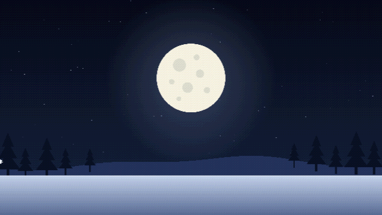
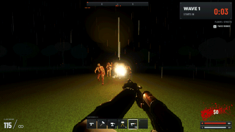
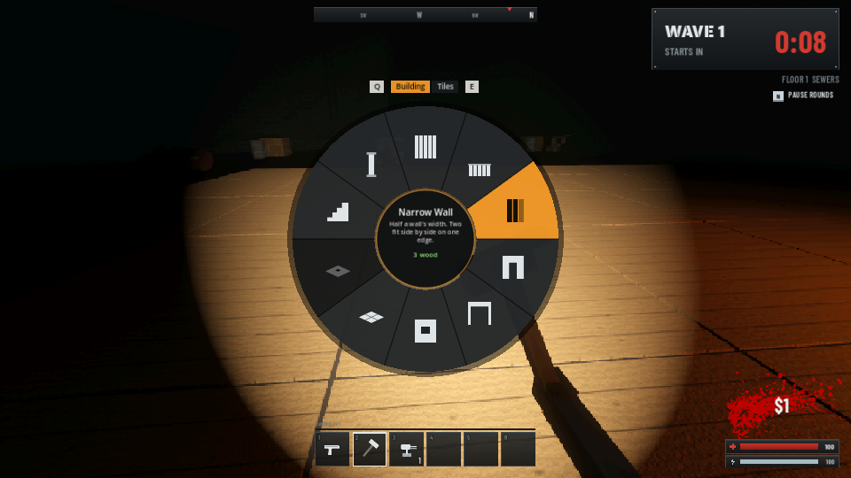
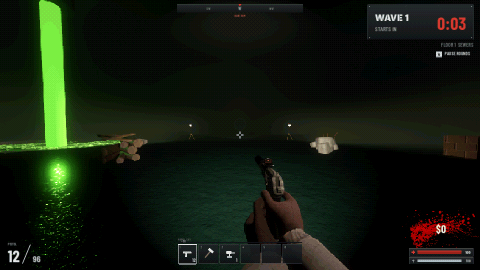
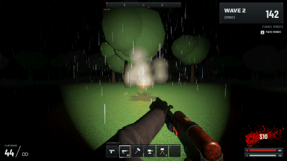

Sled Dog Games

Independent game studio. Our next release is in the works, and it bites.
See what is comingUpcoming release / in development
We are not saying the name yet. We can tell you how it plays.
It is a first-person zombie defense game about one stubborn base and the long climb out. You start in the sewers with a pistol, a hammer and a pile of sticks. Twenty waves later you ride the elevator up a floor, and it all starts again, bigger. Play it alone or with up to three friends.
- Genre
- First-person zombie defense with base building
- Players
- Solo, or 2 to 4 in co-op
- Platform
- Windows PC
- Release
- To be announced

How it plays
Build. Hold. Climb.
Every floor runs the same way, and every wave is bigger than the last one.

01
Build the base
Everything you build goes up as sticks. Swing at wood piles and scrap heaps to gather materials, then hammer each piece up through wood, concrete, scrap metal and steel.
Fill the gaps with traps, auto turrets, wall turrets and .50 cal window mounts. String up work lights, because it is dark out there and your flashlight only reaches so far.

02
Hold the line
Buy guns off the chalk outlines on the walls. Your weapons earn experience as you use them, and every level deals you three upgrade cards to pick from.
The regular dead are the easy part. Bloaters, Stranglers, Pouncers, Bulldozers, Riders, Weepers and Acid Spitters each need a different answer, and there is a boss called the Tank.

03
Climb out
Survive twenty waves and the mine-shaft elevator carries you, your gear and your crew up to the next floor. Five floors, bottom to top:
- Floor 5The Streetsopen park, thunderstorm
- Floor 4Building Basements
- Floor 3Subway Tunnels
- Floor 2Storm Drains
- Floor 1The Sewersyou start here
Twenty classes
Each one has its own melee weapon and perk. Be the Handyman, the Exterminator, the Field Medic, the Rat King, the Demolitionist, the Necromancer, or one of fourteen others.
A crew of your own
Rescue survivors, hire bodyguards, and give them orders from a command wheel.
The Ratrunner
A heavy three-seat buggy. One of you drives, one works the rear turret, one shoots from the passenger seat. It has its own garage for paint, parts and more turrets.
Research and forge
A research web of 48 upgrades, a smelter for your scrap, and a Sludge Forge that does strange things to your weapons.
Drops
Nuke, Insta-Kill, Max Ammo, Double Points and Carpenter, usually right when you need them.
Stakes, your call
Permadeath for the brave, a forgiving Baby Mode for everyone else, and an optional low-res dithered look for anyone who misses 1998.
Credits
Third-party art in the footage
The game uses some models, animations and fonts made by other people. Thank you to all of them.
Show the full list
- Pistol: based on "Makarov PM FPS animations" by Cransh, CC-BY-4.0. Changes: textures shrunk, arms cut to the hands, unused clips removed.
- SMG: based on "Saiga-9mm FPS Animation" by BURNER, CC-BY-4.0. Changes: textures shrunk, arms cut to the hands, its shot and reload cut out of its single clip, reframed.
- Minigun: based on "Minigun M-134 | First Person Animations" by 1Matzh, CC-BY-4.0. Changes: textures shrunk, arms cut to the hands, unused clips removed.
- Assault rifle: based on "Steyr Aug A1 Assault Rifle - Animated" by user77, CC-BY-4.0. Changes: textures shrunk, arms cut to the hands, its shot and reload cut out of its single clip, reframed.
- Marksman rifle: based on "sniper animated" by DJMaesen, CC-BY-4.0. Changes: textures shrunk, arms cut to the hands, its shot and reload cut out of its single clip, reframed.
- LMG: based on "LMG animated" by DJMaesen, CC-BY-4.0. Changes: textures shrunk, arms cut to the hands, its shot and reload cut out of its single clip, reframed.
- Grenade launcher: based on "Grenadelauncher animated" by DJMaesen, CC-BY-4.0. Changes: textures shrunk, arms cut to the hands, its shot and reload cut out of its single clip, reframed.
- Shotgun: based on "Animated Shotgun" by JUST, CC-BY-4.0. Changes: textures shrunk, arms cut to the hands, the gun's parts rescaled to match the arms, unused clips and a crosshair removed.
- Flamethrower: based on "flamethrower Animated" by DJMaesen, CC-BY-4.0. Changes: textures shrunk, arms cut to the hands, its reload cut out of its single clip, reframed.
- Basic zombies: the "Free Zombies" pack, v0.98.
- Special zombies, the boss and the player body: characters and animations from Adobe Mixamo.
- Fonts, in the game and on this page: Barlow Condensed (Copyright 2017 The Barlow Project Authors, SIL Open Font License 1.1), Saira Stencil One (Copyright 2019 The Saira Stencil Project Authors, SIL Open Font License 1.1) and Special Elite (Copyright 2010 Astigmatic, Apache License 2.0).